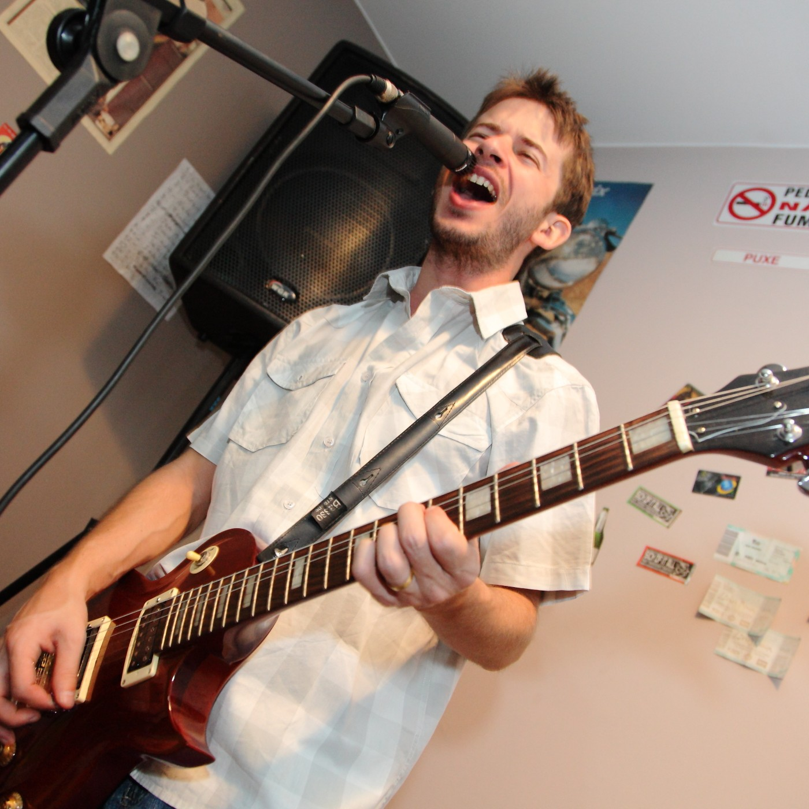
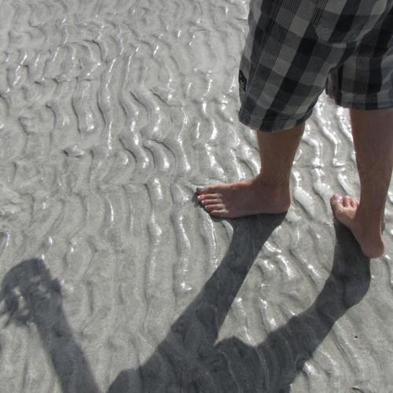
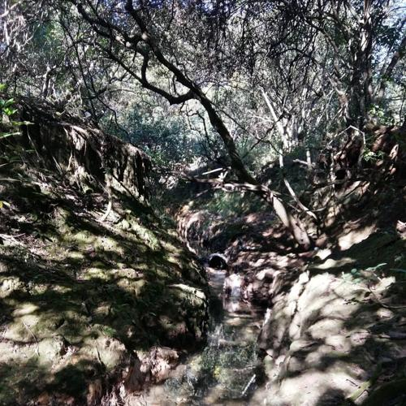
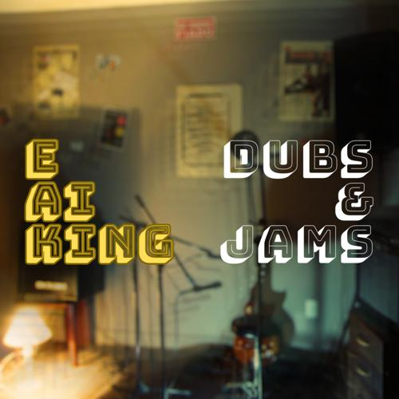
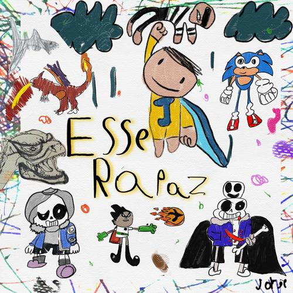
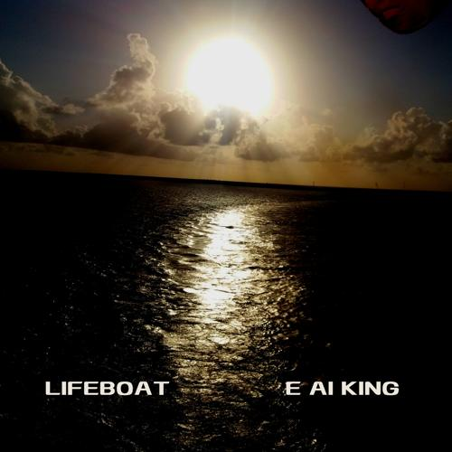
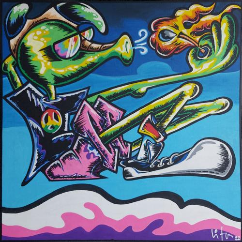
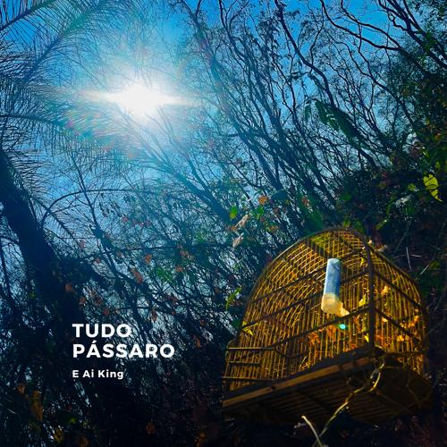

Bio
E Aí King nasceu banda e virou, aos poucos, uma forma de eu me encontrar na música.
Saí da minha última banda, o Grajaú 434, em 2008, e mais ou menos na mesma época descobri o software Reason, quando percebi uma coisa que mudou tudo: eu conseguia gravar bateria, teclado, baixo, guitarra e voz sozinho, no meu próprio tempo. Quando o SoundCloud apareceu, mostrando que dava para publicar música de graça, o caminho ficou claro. Gravei em home studio, mixei no Estúdio Madruga com meu amigo Rafael Maranhão, e fui soltando as músicas uma a uma pelo Blogspot. Em 2010 nasceu o primeiro disco, E Aí King?.
Depois de montar shows e gravar diversas parcerias, a pandemia de covid-19 me fez repensar tudo. Desde então, lancei mais três discos, quatro singles, um livro, videoclipes e um tributo ao rock brasiliense dos anos 90.
E Ai King hoje é isso: rock, ska, samba rock, reggae e ragga se misturando sem forçar a barra, e uma vontade permanente de transformar o que acontece de bom e de ruim em música.

Discografia
Quatro discos, um livro e singles avulsos — cada um com sua própria mistura de ritmos.






